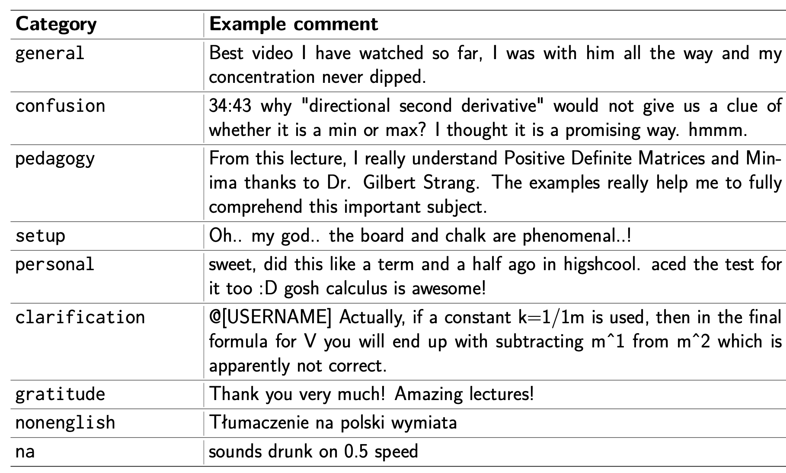
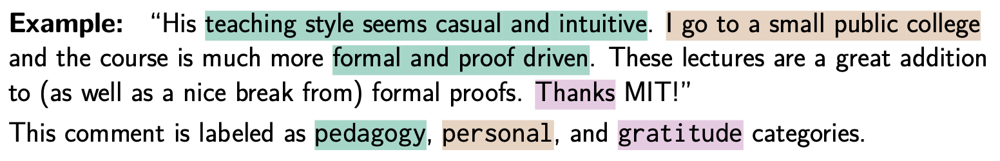

Abstract. Lectures are a learning experience for both students and teachers. Students learn from teachers about the subject material, while teachers learn from students about how to refine their instruction. However, online student feedback is unstructured and abundant, making it challenging for teachers to learn and improve. We take a step towards tackling this challenge. First, we contribute a dataset for studying this problem: SIGHT is a large dataset of 288 math lecture transcripts and 15,784 comments collected from the Massachusetts Institute of Technology OpenCourseWare (MIT OCW) YouTube channel. Second, we develop a rubric for categorizing feedback types using qualitative analysis. Qualitative analysis methods are powerful in uncovering domain-specific insights, however they are costly to apply to large data sources. To overcome this challenge, we propose a set of best practices for using large language models (LLMs) to cheaply classify the comments at scale. We observe a striking correlation between the model's and humans' annotation: Categories with consistent human annotations (>0.9 inter-rater reliability, IRR) also display higher human-model agreement (>0.7), while categories with less consistent human annotations (0.7-0.8 IRR) correspondingly demonstrate lower human-model agreement (0.3-0.5). These techniques uncover useful student feedback from thousands of comments, costing around $0.002 per comment. We conclude by discussing exciting future directions on using online student feedback and improving automated annotation techniques for qualitative research.
SIGHT contains 288 math lecture transcripts and 15,784 comments collected from the Massachusetts Institute of Technology OpenCourseWare (MIT OCW) YouTube channel. Below is an example of what the transcripts and user comments look like.
Here is an example of a lecture transcript in our dataset---this is from the course 18.065: Matrix Methods in Data Analysis, Signal Processing, and Machine Learning.
[...] OK, just as we're getting started, I thought I'd add a few words about a
question that came up after class. Suppose in that discussion last time, where
you were given three, you were given a distance matrix, you were given the distance
between x1 and x2, between x2 and x3, and between x1 and x3, and you wanted to find
points that satisfied that. Well, we're going to fail on this example, because if
the distance here is 1, the distance here is 1, then by the triangle inequality,
the distance from x1 to x3 could not be more than 2. And when we square it, it
could not be more than 4. And here it's 6. So what's going to happen? What goes
wrong in that case? Yeah, I hadn't commented on that, and I'm not sure that the
paper that I referenced does so. So I had to do a little search back in the
literature, because people couldn't overlook this problem. So this is the triangle
inequality fails. And it's not going to help to go into 10 dimensions, because the
triangle inequalities doesn't change. And it's still there in 10 dimensions, and
we're still failing. So what happens? Well, what could happen? Do you remember, and
you'll have to remind me, the key equation. You remember we had an equation
connecting the matrix. [...]We develop a rubric of different feedback categories and label each comment with whether the category applies. Here are the feedback categories and examples.
Many categories can apply to a given comment. Take for instance the comment below. Thus, in our dataset, each comment is annotated as a binary classification task per category, i.e., does this category apply to this comment?
The challenge with online student feedback is that it is unstructured and abundant. This makes it difficult for teachers to learn and improve. Our work investigates ways to automatically synthesize insights and learn from this abundance of student feedback in online educational settings. We propose a set of best practices for using large language models (LLMs) to cheaply classify the comments at scale. In particular, we use GPT-3.5-turbo-0301 to scale annotation of the rubric we've developed and analyze its performance.
|
This website is adapted from this website, which was in turn adapted from this website. Feel free to use this website as a template for your own projects by referencing this!
Icons used in some of the above figures were made by Freepik, ThoseIcons, dDara, Pixel perfect, ThoseIcons, mynamepong, Icongeek26, and Vitaly Gorbachev from flaticon.com.
{kind=link}
{kind=link}
{kind=link}
{kind=link}
{kind=link}
{kind=link}